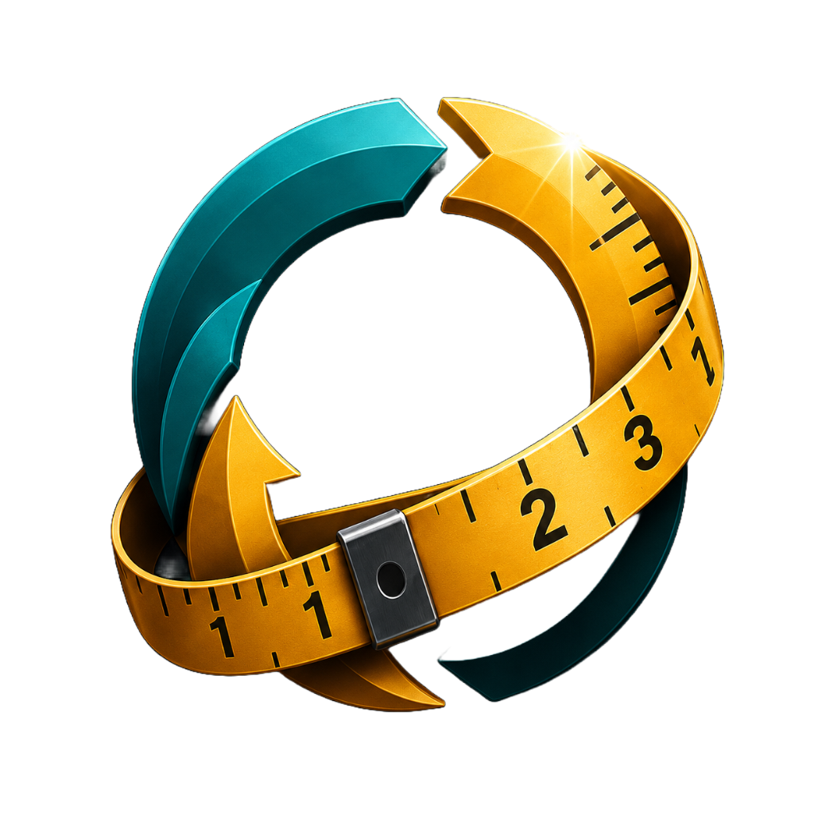
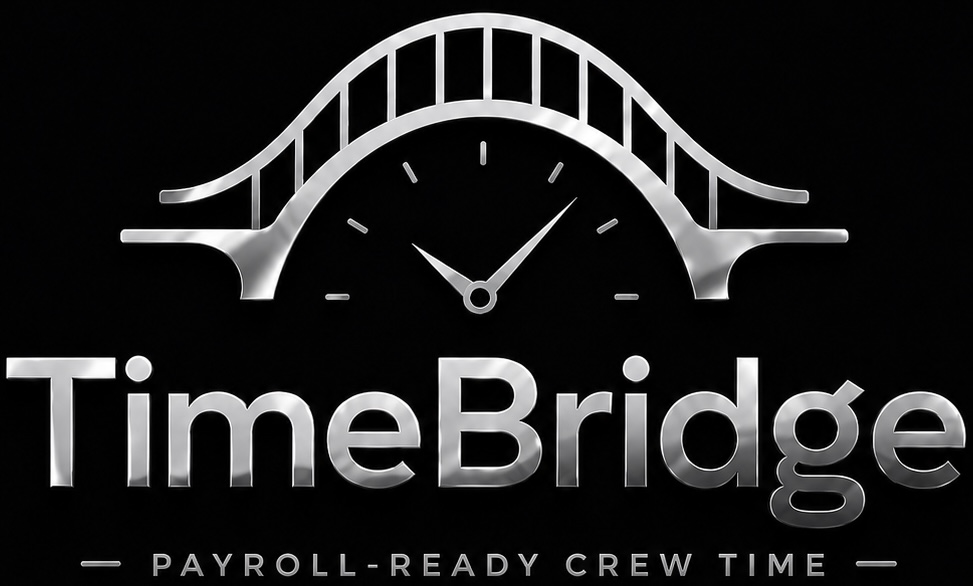

AVEAHi
Inspection + Estimating Intelligence
AVEAHi helps roofing companies inspect properties, trace roof sections, build estimates, evaluate assemblies and warranties, account for weather, and prepare professional proposals.
Bringing structure, clarity, and control to real-world operations.
Aveah Systems develops connected software for commercial roofing teams — from inspection and estimating through field operations, time tracking, and closeout.

AVEAHi helps roofing companies inspect properties, trace roof sections, build estimates, evaluate assemblies and warranties, account for weather, and prepare professional proposals.
MYCOM connects approved work to the field with tickets, crew assignments, documentation, production visibility, job progress, and closeouts.

TimeBridge gives crews a straightforward way to record work hours and gives leads and office teams a clear path to review, approve, audit, and export time records for payroll.